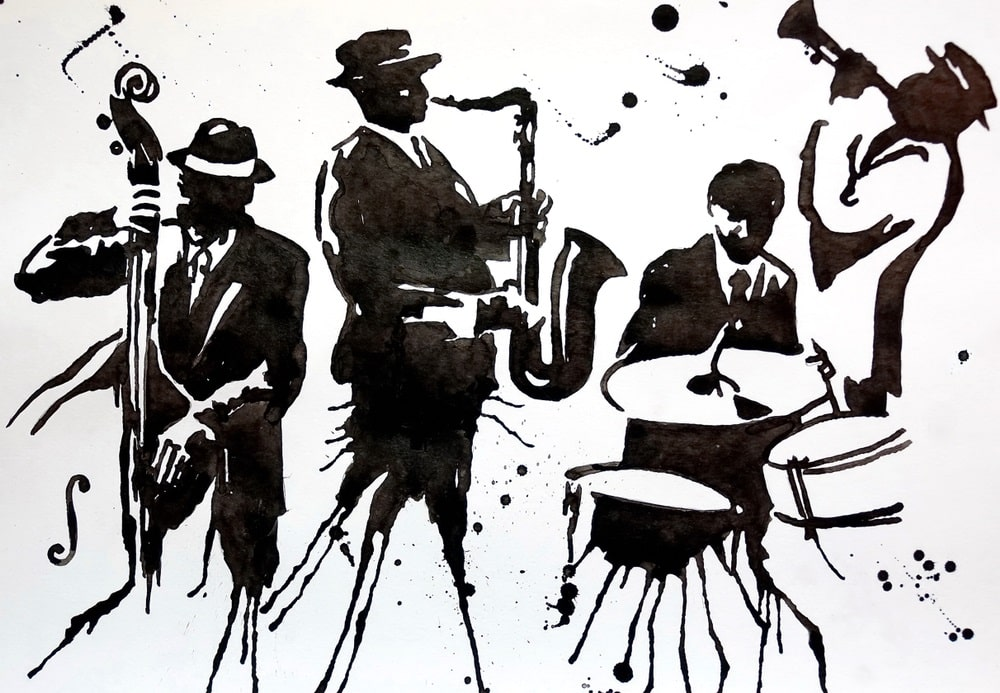

Jazz is a music genre that originated in the African-American communities of New Orleans, Louisiana in the late 19th and early 20th centuries, with its roots in blues and ragtime.[1][2][3] Since the 1920s Jazz Age, it has been recognized as a major form of musical expression in traditional and popular music. Jazz is characterized by swing and blue notes, complex chords, call and response vocals, polyrhythms and improvisation. Jazz has roots in European harmony and African rhythmic rituals.
It's defined by syncopated rhythms, polyphonic ensemble playing, bent notes, improvisation, unique voices, and pitch and timbre distortions. It originated among the African-American people in the United States during the 19th-20th century.It’s widely believed that listening to jazz music has a relaxing effect and can affect your brain positively.

Jazz music is a broad style of music characterized by complex harmony, syncopated rhythms, and a heavy emphasis on improvisation. Black musicians in New Orleans, Louisiana developed the jazz style in the early twentieth century.